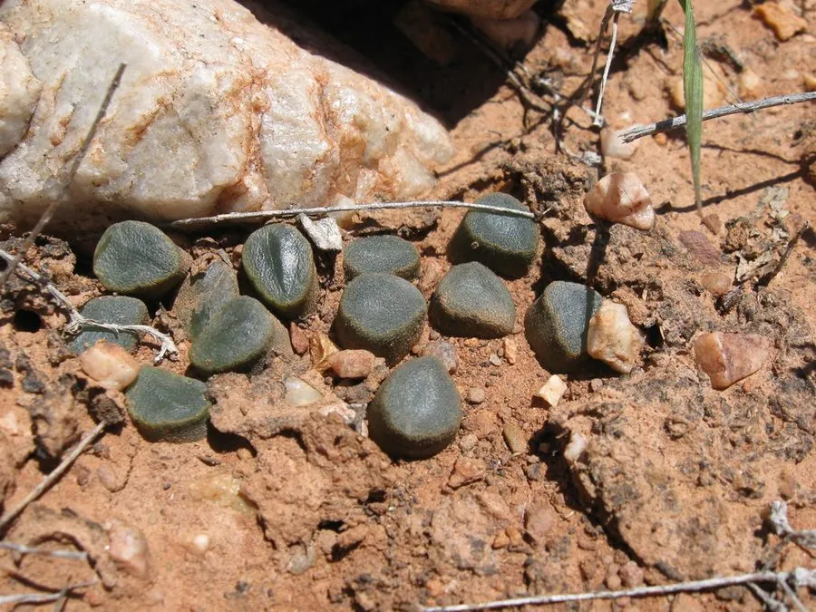

多肉植物 · 植物界
万象 Haworthia maughanii

阿福花科瓦苇属多肉，叶片截形、窗面通透如玉石，株型低矮，原产南非，是瓦苇属中形态奇特、备受追捧的品种。
- 分类
- 门被子植物门纲单子叶植物纲目天门冬目科阿福花科属瓦苇属
- 栖息环境
- 南非东开普省干旱地区的砾石地与岩缝
- 地理分布
- 原产南非东开普省，世界各地盆栽观赏
- 保护级别
- 暂无评估
物种志
万象为阿福花科瓦苇属的多年生肉质草本，叶片肥厚、近圆柱形，长 3–5 厘米，先端平截，截面半透明，呈淡绿色或灰绿色，窗面有细密纹路。叶片自基部放射状排列，形成低矮的莲座，直径 6–8 厘米，植株大部分埋于土中。花梗自叶腋抽出，花小、白色，花期春季；果实为蒴果。
万象原产南非东开普省的干旱地区，喜半阴、温暖干燥和通风良好的环境，耐旱、怕强光和积水。它叶片截面通透如玉，形态奇特，是瓦苇属中最具代表性的“窗面”植物之一。栽培用颗粒土，植株宜浅栽，生长期保持微润，夏季遮阴通风，冬季控水并保持 8℃ 以上；繁殖以分株和播种为主，生长缓慢，需耐心养护。
形态与习性
- 冠幅莲座直径 6–8 厘米
- 叶片近圆柱形，先端平截、半透明
- 花期春季，花小、白色
- 光照喜半阴散射光，忌强光
- 水分耐旱，生长期保持微润
- 土壤排水良好的颗粒土，宜浅栽
- 繁殖分株、播种
- 生长生长缓慢，成株需数年
趣味知识
- 万象的叶片截面半透明，像一块块温润的玉石。
- 它大部分植株埋在土里，只露出叶片的透明窗面。
- 万象生长缓慢，一株成株往往需要数年时间。